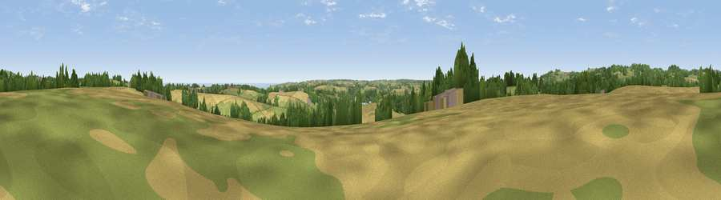

Viewpoint near Porth Navas
#11709 in England · top 23% of its area beats it · near Porth NavasThe view, rendered

A 360° render of this exact spot computed from the terrain model, tree cover and land cover — summer colours, afternoon light, calibrated against photographs of famous viewpoints. Real trees, hedges and buildings will differ in detail.
The panorama
Grey silhouette: terrain skyline in each direction (720 bearings, Earth curvature and refraction included). Dashed green: skyline with trees (+15 m) and buildings (+8 m) as obstacles. Blue strip: how far the ground is visible on each bearing.
Where the view opens
Wedge length = distance to the farthest visible ground on that bearing (vegetation-aware). Rings at 10, 25 and 50 km.
What fills the view
40% grassland · 32% cropland · 23% woodland · 4% water · 1% built-up
Angular shares of the visible panorama (visual magnitude), not map area. Landscape diversity 0.54 (0–1 Shannon).
Key numbers
More beautiful places nearby
The staircase of upgrades: each row has a higher view potential than everything closer. Driving times are estimates from straight-line distance, calibrated against real road routing — check an actual route before setting out.
| Place | Direction | Drive | Score |
|---|---|---|---|
| Viewpoint near Constantine | W · 4 km | ~9 min | 66.7 |
| Viewpoint near Seworgan | WNW · 4 km | ~10 min | 67.1 |
| Viewpoint near Mabe Burnthouse | N · 5 km | ~10 min | 71.9 |
| Viewpoint near St. Keverne | SSE · 6 km | ~14 min | 72.2 |
| Viewpoint near Porthoustock | SE · 9 km | ~18 min | 74.0 |
| Viewpoint near Lanner | NNW · 12 km | ~23 min | 74.5 |
| Carn Brea | NW · 14 km | ~25 min | 81.1 |
| Viewpoint near Ashton | W · 15 km | ~27 min | 81.3 |
50.12007, -5.14045 · source: osm peak · position refined by local search. Computed location — check access rights before visiting.